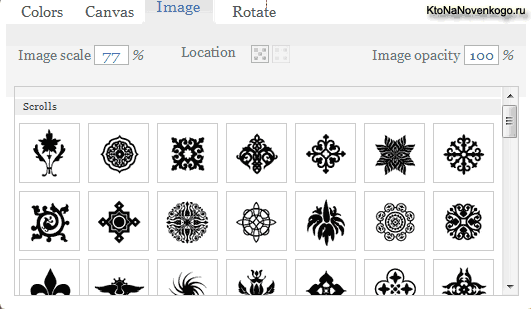
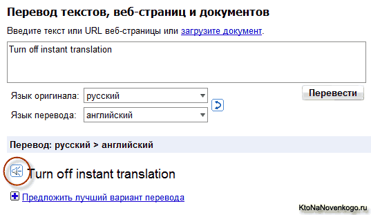
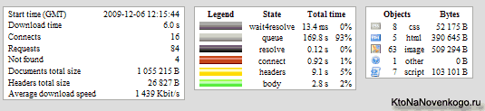

Фон для сайта — скачать бесплатно в Bgpatterns и Ava7Patterns, сервисы для определения скорости загрузки сайта (Site-Perf и Pingdom)
Здравствуйте уважаемые читатели блога KtoNaNovenkogo.ru. Сегодня в эфире очередной, третий по счету, выпуск Веб-обзоров. В этот раз разговор пойдет про то, где можно найти подходящий фоновый рисунок для своего сайта, а так же протестировать скорость загрузки своего сайта, про новые возможности переводчика Google и сервис, предоставляющий всю информацию о вашем или чужом блоге. Да, еще поделюсь с вами, найденными мною очень красивыми сырными RSS иконками. Приступим.
Фон для сайта — где найти и бесплатно скачать
Есть много способов найти подходящий фоновый рисунок для своего сайта, блога или форума.
Можно набрать соответствующий запрос в Яндексе или в Google и
посмотреть, какие фоны предлагают скачать найденные таким образом сайты.
Но это очень долгий способ, т.к. вам придется перелопатить большое
количество изображений, зачастую вообще не соответствующих вашему
представлению о красивом фоне. Можно пойти другим путем и нарисовать
нужный фон в Фотошопе, но опять же не все это умеют.
Мне больше пришлась по душе идея создания нужного вам фона прямо на
сайте, с помощью простых инструментов, освоить которые ни у кого не
составит труда. Это своеобразные конструкторы фонов для сайта, понятные и доступные практически всем. В своей практике я использую два подобных сайта — ava7patterns и Bgpatterns. Если кто-то знает еще подобные сайты, то буду очень благодарен, если вы напишите об этом в комментариях.
Расскажу про работу по настройке нужного фона на примере сайта Bgpatterns. Когда вы попадаете на главную страницу сайта Bgpatterns, то видите две области — верхнюю и нижнюю. В нижней области вы можете посмотреть варианты фона, которые создали другие посетители данного сайта и посчитав их удачными, сохранили для общего обозрения и использования. Верхняя же область сайта, как раз и представляет собой конструктор фонов. Слева расположено окно для тонкой настройки цветовой гаммы, рисунка, текстуры и угла поворота рисунка.

На первой вкладке «Colors» вы можете выбрать два цвета — для самого фона и для рисунка, который будет расположен на этом фоне. На вкладке «Canvas» вы выбираете тип и резкость отображения текстуры (например, можно добиться эффекта рисунка на грубой ткани и т.п.). На вкладке «Image» вы можете выбрать рисунок, формирующий фон сайта, настроить его размер в поле «Image scale», расположение в поле «Location» и прозрачность в поле «Image opacity». На вкладке «Rotate» вы можете повернуть рисунок вокруг своей оси на любой градус.
После того, как вы закончите с настройками фона, можно посмотреть как будет выглядеть созданный вами фон на странице. Для этого нажмите в правом окне по ссылке «Apply background». Данный фон будет применен ко всей верхней части страницы сайта. Если вас все устраивает, то жмите на ссылку «Download image» для сохранения созданного вами фона на своем компьютере. Теперь вы можете использовать созданный таким образом фон у себя на сайте, просто задав его в настройках вашего шаблона (Шаблоны — выбор шаблона для Joomla 1.5).
Если вы считаете, что у вас получился шедевр и хотите поделиться своим произведением с другими посетителями данного ресурса, но нажмите на ссылку «Save to My patterns». Созданный таким образом фон я использовал, например, на этом сайте. Работа с конструктором фонов ava7patterns похожа по сути на то, что я описал выше. Думаю, что вы разберетесь сами.
Переводчик Google научился произносить английские слова и фразы
Сделал для себя недавно замечательное открытие. Оказывается переводчик Google умеет произносить английские слова и фразы. Пока вроде поддерживается только английский, но думаю, что вскоре перечень языков будет расширен. Для меня это стало просто событием, т.к. моих познаний в английском зачастую не всегда достаточно, чтобы понять как правильно произносится то или иное слово. Кроме того, мой сын учит английский самостоятельно, без репетиторов и остро встает вопрос: а как, собственно, правильно произносится то или иное слово?

До этого мы активно использовали для этих целей замечательную программу Lingvo, в которой имеется довольно большая база озвученных русских и немецких слов. Причем, слова там произносятся, вроде как даже, носителями языка. Но проблема в том, что база эта ограничена и довольно часто встречаются слова, которые не имеют озвучки. Вот именно для таких случаев и будет теперь использоваться переводчик Google. Что замечательно, он может озвучивать не только отдельные слова, но и целые фразы. На мой не профессиональный взгляд, качество озвучки очень хорошее.
Сырные иконки (RSS Cheese) для привлечения внимания подписчиков к вашей RSS ленте
Может быть я не очень много хожу по разным богам, но тем не менее еще нигде не видел иконки для подписки на RSS ленту (Все про RSS, фид, feed) в виде сыра. У вас есть возможность соригинальничать и поставить на своем блоге или сайте такую иконку. Ведь, как известно, иконка RSS должна быть большая, яркая, привлекать внимание и, что немаловажно, отличаться от аналогичных иконок на других сайтах и блогах.
Этот пак иконок можно скачать с сайта автора или же прямо отсюда. В комплект входят иконки размером: 64?64, 128?128, 256?256 и 512?512. Распространяется пак иконок совершенно бесплатно.
Сервисы для определения скорости загрузки сайта
Наверное, все вы понимаете, что скорость, с которой загружается ваш сайт, блог или форум, является очень важным показателем. Если у вашего проекта с этим показателем не все в порядке, то это может повлечь за собой довольно неприятные последствия. И самое важное из них то, что посетители могут отказаться от работы с вашим ресурсом, т.к. он очень долго подгружает страницы. Кроме этого, поисковые системы, в особенности Google, учитывают скорость загрузки сайта при общей оценке полезности того или иного ресурса.
Для того, чтобы понять, а как быстро подгружаются страницы вашего сайта можно воспользоваться, например, возможностями такого расширения для браузера FireFox, как FireBug. А можно воспользоваться услугами сайтов, которые предназначены для измерения скорости загрузки. Далее, я приведу в качестве примера несколько таких ресурсов.
Измеряем скорость загрузки сайта на сервисе Site-Perf
Сервис Site-Perf позволяет перед началом тестирования скорости загрузки вашего сайта выбрать местоположения сервера (поле «Test-point»), с которого будет осуществляться тестирование. А так же, можно будет выбрать количество потоков для загрузки вашего сайта (поле «Max threads per host»). Разные браузеры грузят сайт в разное количество потоков и, таким образом, вы сможете симулировать загрузку сайта в различных браузерах. Ну и, конечно же, в поле «URL» вы должны ввести адрес тестируемого сайта. Затем жмете на кнопку «GO» и дожидаетесь результата.

Результат будет представлен как в виде приведенной на рисунке таблички с общим временем загрузки и общим весом страницы, так и в виде подробного графика с диаграммами загрузки всех отдельных элементов страницы, адреса этих элементов, их размера и ответа сервера на запрос этих элементов. В общем, вам будет предоставлена вся подноготная загрузки данной страницы.
Pingdom — измеряет скорость загрузки сайта, пинг, а также мониторит доступность вашего сайта
Сервис Pingdom. Здесь не нужно выбирать с какого именно сервера проводить тестирование, а так же не нужно указывать количество потоков. Достаточно просто указать адрес страницы, скорость загрузки которой вы хотите протестировать. В результате будет представлена аналогичная диаграмма времени загрузки отдельных файлов страницы вашего сайта, а так же их адрес и вес. Внизу будет выведена обобщенная информация теста.
Внизу страницы можно скопировать постоянную ссылку на проделанный тест, а также отправить его по E-mail или в Твитер. Так же, в нижней части окна, можно подписаться на мониторинг сайта на предмет доступности. Если ваш сайт упадет, то вам будет выслано сообщение на E-mail, либо SMS на сотовый. Но эта услуга является платной, хотя и имеется возможность бесплатного триала.
Для измерения пинга до вашего сайта, а так же для просмотра Traceroute вам нужно будет выбрать в самом верху страницы вкладку «Ping and Traceroute». Вводите в предлагаемую форму адрес вашего сайта без http, ставите галочку в чекбокс «Traceroute» или «Ping», под этой формой, и жмете «Test now».
Блосье (досье на блог) — посмотреть всю информацию на интересующий вас блог
Ну, конечно, информация будет не вся, но тем не менее ее будет достаточное количество. Суть работы сервиса заключается в том, что вы вводите адрес своего блога или любого другого интересующего вас блога в предназначенное для этого место на главной странице сайта Блосье, нажимаете ENter и получаете через некоторое время результирующую информацию:
- информация о SEO показателях, учитываемых поисковиками — длина доменного имени, длина заголовков, количество ключевых слов, длина описания сайта, вес html-страничек, количество тегов акцентирования на странице, наличие иконки сайта (favicon.ico)
- Информация о доменном имени — IP-адрес сайта, информация WHOIS: владелец, дата регистрации
- Приводится скриншот блога
- Информация о пузомерках PR, ТИЦ, а так же о наличии блога в каталогах DMOZ и Яндекс.Каталоге
- Соответствует ли сайт стандартам XHTML, CSS, RSS (валидация) и если нет, то приводится количество ошибок в виде ссылки, щелкнув по которой, можно перейти на страничку с подробным описанием имеющихся ошибок
- Количество обратных ссылок по данным поисковиков Яндекс. Блоги, Technorati, Google, а так же количество страниц в индексе Яндекса, Google и Rambler
- Присутствует ли данный блог в наиболее известных каталогах блогов
- Сколько имеется социальных закладок на данный блог в популярных сервисах социальных закладок
- Позиции блога в разнообразных рейтингах блогов
- Количество подписчиков на данный блог в feedburner.com, rss2email.ru и livejournal.com.
В общем, попробуйте сами и узнаете много интересного о своем или чужом блоге. На этом разрешите откланяться.
У Евгения Попова вышел новый видекурс Все Технические Моменты Онлайн Бизнеса в Видеоформате, который стоит того, чтобы с ним ознакомиться.
Предлагаю вашему вниманию так же и другие обзоры популярных онлайн сервисов:
- Проверка орфографии и пунктуации онлайн
- Яндекс и Гугл картинки
- Онлайн анализ сайта
- Обратная связь - варианты создания для различных сайтов
- Красивые шрифты для сайта онлайн
- Мониторинг доступности сайтов
- Подбор ключевых слов в Яндекс Вордстат (wordstat.yandex.ru)
- Кросспостинг в онлайн сервисах
- Создание иконки Favicon (фавикон)
- Выпадающее горизонтальное и вертикальное меню - создание онлайн
- Кнопки для сайта
- Транслит и транслитерация
- Яндекс (Yandex)
- Google (Гугл)
- Рамблер (Rambler)
Удачи вам! До скорых встреч на страницах блога KtoNaNovenkogo.ru
-
- Оптимизация CSS в Page Speed — как сжать CSS и отключить внешние файлы стилей в WordPress для увеличения скорости загрузки сайта
- 2IP (скорость интернета, ip), видеокурс по работе с GoGetLinks, вставка видео с YouTube на сайт,
- Онлайн сервисы для вебмастеров — FTP клиент Net2ftp, Google Alerts, разрешение экрана для сайта
- Водяной знак — онлайн сервис для добавления водяных знаков на изображения, сервисы по подбору сочетающихся цветов для сайта и сервис для оптимизации изображений
- Где бесплатно создать логотип и как сжать картинки для сайта, поисковая оптимизация изображений
- Создание кнопок для сайта на сервисе Da Button Factory, сервис Texster для наглядного подбора шрифтов
- GoGetLinks, создание иконок из ваших E-mail и ICQ номеров, оптимизация изображений для сайта

Обширная статья, но зацепило измерение скорости загрузки сайта с помощью Site-Perf. Попробовал, сразу кое-что подправил. спасибо.
Nick Lavu: пожалуйста. Рад, что вам пригодилось. =)
Для вебмастера есть очень полезный сервис на Яндекс — Проверка орфографии.
Кстати Дмитрий у вас тоже есть орфографические ошибки в постах, и в частности в этом =)
Спасибо-позновательно.Не понял как вставить англоговорилку.
Nick Lavu говорит, что:
Рад что сервис приносит пользу. Кстати, насчет пинга — на site-perf.com тоже есть соотв. тулза, называется 'Network quality', и, как и положено, более детальная — показывает не только время пинга, но и уровень потерь пакетов с высокой точностью.
Надо было мне ватермарку ставить на картинке «Понравился пост?», уже на 2-м блоге её вижу
Max: как всегда, вы меня выручаете. С орфографией у меня действительно бывают траблы, т.к. печатаю слепым десятипальцевым методом, то при этом иногда буквы путают свои места в словах и пропускаются. Еще не тот уровень — скорость есть, а точности печати пока что нет.
Предложенный вами сервис очень мне поможет при выявлении таких ошибок. Спасибо огромное. Буду пользовать. Правда, у меня еще большая проблема с синтаксисом, но я думаю, что вряд ли имеется сервис для проверки правильности расставления запятых. Или я ошибаюсь?
site-perf: спасибо за уточнение. =)
Владимир: так она, вроде никуда не вставляется (это не скрипт, а сервис), просто используете ее для озвучки нужных вам английских слов или фраз.
Дмитрий говорит, что:
у меня такая же ситуация
Дмитрий говорит, что:
я не встречал, мне кажется орфографические ошибки сильнее бросаются в глаза, а запятые я расставляю по смыслу и основным правилам грамматики.
Кстати в ФФ и Опере есть замечательная функция проверки орфографии при написании статей самое то!
Еще есть неплохой сервис DeepText
Я понимаю ,но у меня этот сервис не высвечивается.Дмитрий:
Дмитрий не мог пройти мимо этой ошибки.
Выше картинки для RSS ленты.
______________________________
Может быть я не очень много хожу по разным богам
ссылочка на блосье битая...
Я такой новенький и блестящий чайник, что просто сияю))) Для меня мало того, что вы уже прожевали и в рот положили. А глотать за меня кто будет?!!)) Есть ли у меня шанс разобраться в этом,если я не программист и не веб-мастер,не имею необходимого опыта и знаний,а лишь огромное желание ?Спасибо большое.